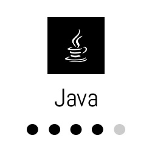
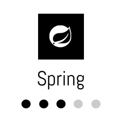
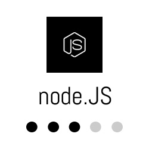
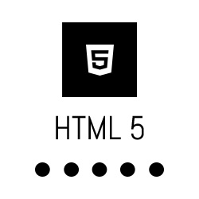

Tras estudiar Desarrollo de Aplicaciones Multiplataforma en el instituto Zaidin Vergeles de Granada he trabajado como Back-End Developer y Full-Stack Developer, teniendo la oportunidad de trabajar con lenguajes como Java y Typescript. También he trabajado con Spring Framework, Node.JS y Ruby on Rails.






-
Novatec GmbH
Empresa alemana con sede en Granada en la que he trabajado principalmente como Back-end Developer en proyectos con Springboot y Java. Además, trabajé con las herramientas de Azure.| |
2023 -
Nazaries IT
Empresa de Granada en la que he trabajado como Full-Stack Developer en proyectos con Ruby on Rails y Node.JS, además de poder aprender nuevos lenguajes como Typescript y React. También he tenido la oportunidad de tomar contacto con las diferentes herramientas de AWS.| |
2021 -
Guud TV
Start-up dedicada a la creación de campañas publicitarias personalizadas en redes sociales, realizando labores de desarrollador Back-End. Para esto, utilizabamos Java y Apache Storm para comunicarnos con las diferentes APIs de redes sociales.|
2020 -
Elca Informatique
Empresa Suiza con más de 50 años en el sector para la que trabajé como Full-Stack Developer. Durante este tiempo, profundicé en mi conocimiento sobre Spring Framework, Java y Angular. También tuve la posibilidad de realizar diferentes cursos sobre Kotlin y TDD| | |
2018 -
Everis - NTT Data España
Empresa para la que trabajé como Back-End Developer en un proyecto con Orange España renovando sus plataformas digitales. En dicho proyecto tuve mi primera toma de contacto con SCRUM y profundicé mis conocimientos en Java, además de empezar a familiarizarme con otras teconologías como Spring Framework o Angular.| |
2017 -
Weptun GmbH
Realicé un periodo de práctica en Weptun GmbH, empresa de desarrollo de aplicaciones móviles con sede en Munich (Alemania) utilizando Java para el desarrollo de varias aplicaciones Android|
2016